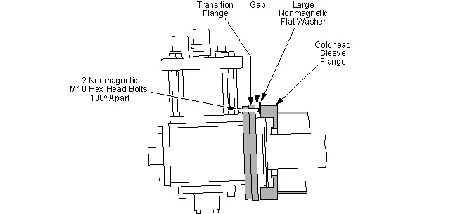

| NOTE: | Gap adjustments can be made before fully tightening the mounting bolts by using two flathead screwdrivers wedged between the transition and sleeve flanges. Gap adjustments can also be made by temporarily removing the desired mounting bolt, inserting and fully threading a M10 x 50 mm (2 inch) long hex head bolt through the transition flange and using that bolt like a jack screw against a flat washer on the sleeve flange to wedge open the gap slightly. See Illustration 47. |
Illustration 47: Adjusting Sleeve and Transition Flange Gap Using M10 Jackscrews
